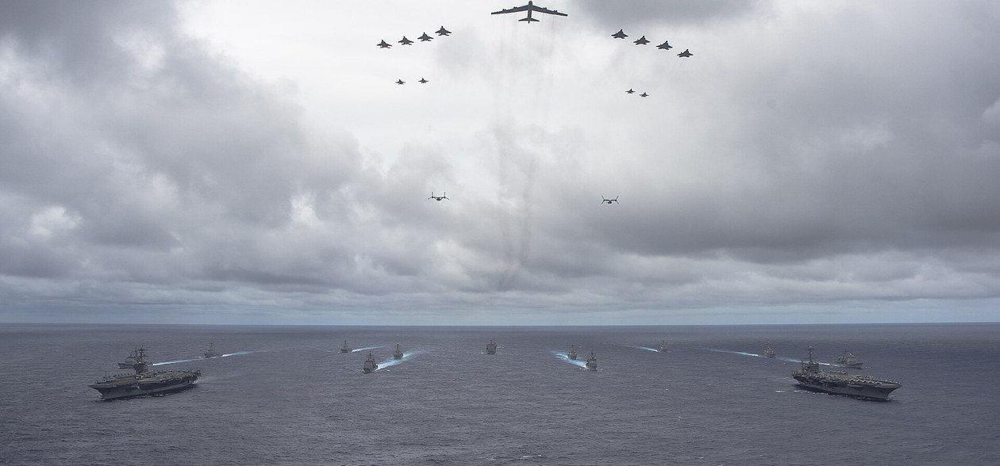

1주차 · 공통
무기체계란 무엇인가
- 무기체계 = 무기 + 운용 인력 + 지원체계
- 전쟁 양상: 재래식 → 네트워크 중심전 → 지능화전
- 강의 구성 · 평가 · AI 사용 범위 안내
AI 적용 무기체계
- AI 무기체계의 개념과 자율성 수준
- 인간 개입: In · On · Out-of-the-loop
사진: 밸리언트 실드 2014 합동 편대 · Wikimedia Commons (퍼블릭 도메인)